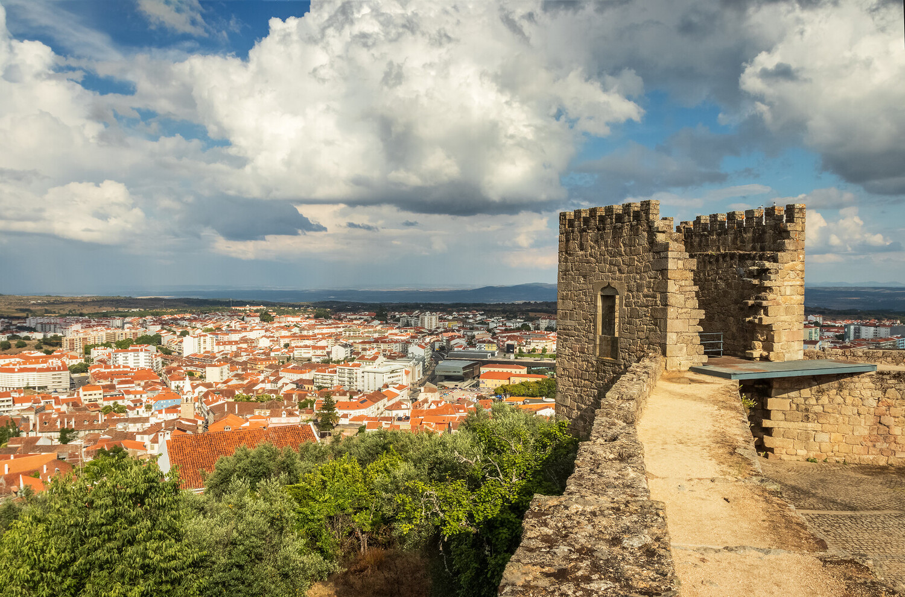
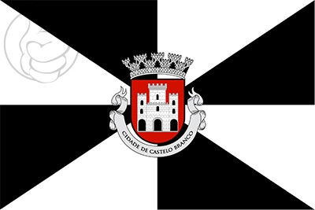
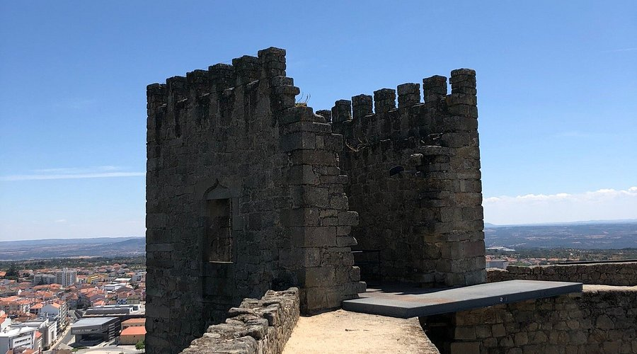
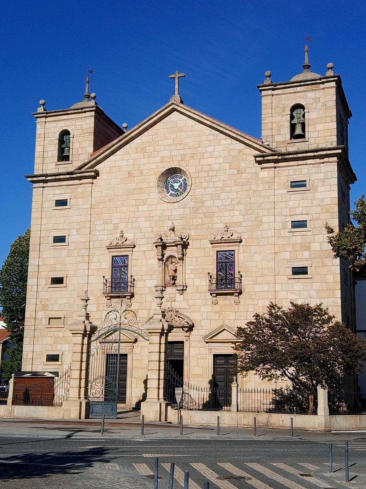
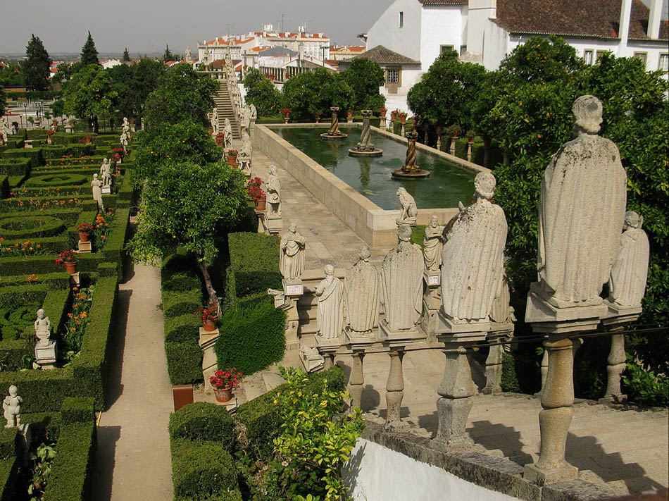
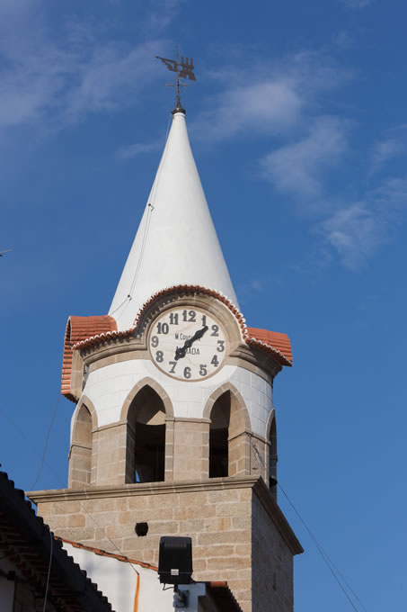

Multimédia
Aqui encontras imagens e vídeos relacionados com Castelo Branco.
Ir para Fotografias | Ir para Vídeo | Ir para Poesia
Fotografias






Vídeo
Poesia
Entre colinas ergues-te altaneiro,
cidade de história, de traço certeiro.
Nos jardins do Paço, flores a dançar,
segredos antigos o vento a soprar.
Bordados finos, mãos de tradição,
cada ponto guarda alma e paixão.
Na torre o relógio o tempo a marcar,
conta memórias que nunca vão parar.
Terra do sol, da Beira o coração,
acolhe quem chega com calor e emoção.
Castelo Branco, berço de encanto,
és poesia viva, és Portugal em canto.